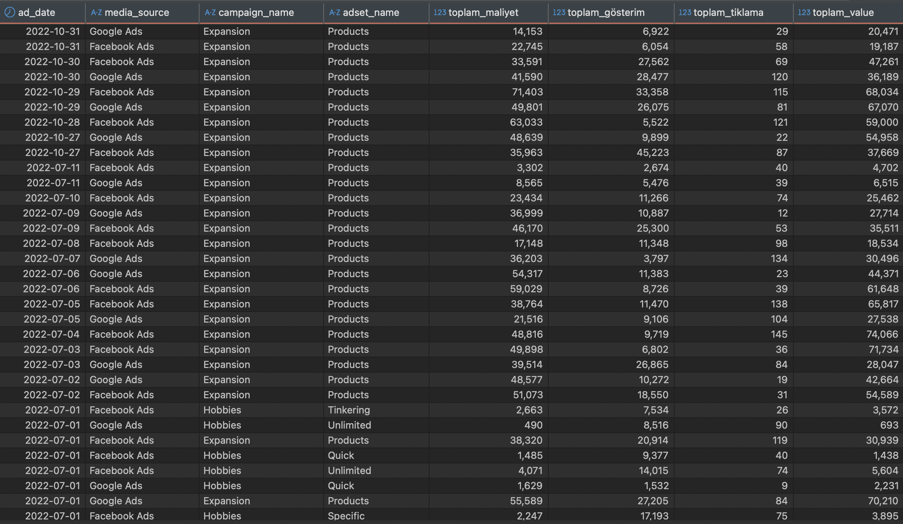

Proje 7 – Cross-Platform Reklam Analizi (SQL)
Açıklama
Bu analiz, Facebook ve Google reklam verilerinin SQL ile normalize edilip karşılaştırmalı şekilde analiz edilmesini sağlar. Amaç, iki platformun reklam performanslarını net biçimde ortaya koyarak hangi kampanyaların daha verimli olduğunu anlamak ve bütçeyi doğru kanala yönlendirmektir.
Bu analiz ne kazandırır?
- Facebook ve Google kampanyalarının aynı ölçütlerle kıyaslanmasını sağlar.
- Harcama, gösterim, tıklama, dönüşüm gibi temel metrikler karşılaştırılır.
- En yüksek ROMI sağlayan kampanyalar platform bağımsız olarak ortaya çıkarılır.
- Bütçe verimliliği için hangi platformun hangi kampanyalarda daha başarılı olduğu tespit edilir.
- Kampanya düzeyinde analiz yapıldığından, pazarlama ekibi detaylı aksiyonlar alabilir.
Sonuç: Reklam bütçesini platformlar arasında nasıl bölüştürmesi gerektiğini bilen bir marka, çok daha stratejik büyür.
Öneriler
- ROMI’si düşük olan platformlar için hedefleme, kreatif ya da teklif stratejileri gözden geçirilmeli.
- Aynı hedefe yönelik çalışan kampanyalar platform bazında ROMI’ye göre yeniden dağıtılmalı.
- Platformlar arasında maliyet-performans farkı yüksekse segment bazlı farklılaşma yapılmalı (ör. mobil için Google, masaüstü için Facebook).
- En başarılı kampanya tipi belirlenip hem platformda yaygınlaştırılmalı hem de varyasyonları test edilmeli.
- Tıklama sayısı yüksek ama dönüşümü düşük kampanyalar için landing page optimizasyonu yapılmalı.
Teknik Analiz
Kullanılan Araçlar: PostgreSQL / BigQuery · CTE, JOIN, UNION ALL, CASE WHEN
Veri Yapısı: facebook_ads & google_ads normalize edilerek birleştirildi
Alanlar: campaign_name, platform, ad_spend, impressions, clicks, conversions, revenue
Analiz Bileşenleri:
- Veri Normalizasyonu: UNION ALL + CASE ile tek formata getirme.
- Toplam Harcama & Gelir: platform bazlı SUM & ROI hesaplaması.
- CTR, CPC, CPM, ROMI: tüm temel performans metrikleri.
- En Verimli Kampanyalar: yüksek harcama & yüksek ROMI sıralaması.
- Filtreleme / Segmentasyon: tarih, kampanya türü, hedef segment vb.
Araç:
PostgreSQL